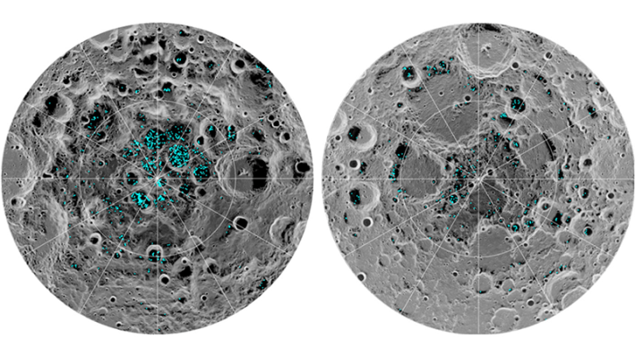

When the crew of the Artemis II mission reached the moon yesterday, there was already a spacecraft waiting in orbit—the Lunar Reconnaissance Orbiter (LRO). Launched in 2009, the LRO has been quietly orbiting the moon and mapping its surface for almost 17 years. New research based on LRO data published today in Nature Astronomy is shedding light on one of the moon’s greatest mysteries: where the moon’s water came from.
Although the lunar surface is arid, there are traces of water molecules trapped in the powdery soil and even higher concentrations located deep within the craters along the moon’s poles, many of which haven’t seen sunlight in billions of years. This new analysis from a team of researchers from the University of Colorado at Boulder suggests lunar water there accumulated slowly.

MOON WATER: This image shows the distribution of surface ice at the moon's south pole (left) and north pole (right). Blue represents the ice, and the gray scale corresponds to surface temperature (the darker it is, the colder it is). Image by NASA.
“It looks like the moon’s oldest craters also have the most ice,” study author Paul Hayne said in a statement. “That implies the moon has been accumulating water more or less continuously for as much as 3 or 3.5 billion years.”
The team arrived at that conclusion after using computer simulations informed by LRO measurements to turn back the clock on the moon’s history. The areas of the moon that were shadowed the longest turned out to be the same spots where water was found.
Read more: “What Can We Do with Moon Dust?”
But how did it get there?
The slow accumulation of lunar water rules out a single dramatic event like a massive comet impact. Still, researchers say, it could have come from volcanic activity pushing water from deep within the moon to the surface. It also could have traveled there via solar winds. The sun blows charged particles, including hydrogen, to the moon’s surface where it could interact with oxygen in the regolith to form water.
“Ultimately, the question of the source of the moon’s water will only be solved by sample analysis,” Haynes said. “We will need to go to the moon to analyze those samples there or find ways to bring them from the moon back to Earth.”
While the Artemis III mission was originally set to put astronauts on the shadowy lunar south pole to do just that, those plans have been pushed back, leaving our future landing site as something of a question mark. If we can locate a good site, astronauts may be able to use lunar ice as drinking water, or split it into its constituent parts, converting it into breathable oxygen and even rocket fuel. In other words, humanity’s future on the moon could lie in these polar ice reserves, waiting to be unlocked. 
Enjoying Nautilus? Subscribe to our free newsletter.
Lead image: NASA